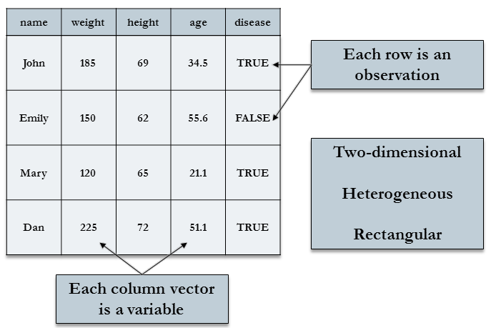

Statistical Analysis with R: Data Management and Automation
Alex Sanchez
Outline: Data Exploration
Data managements with dplyr
The pipe operator %>%
Merging datasets
*Based on this presentation: Data Managment, UCLA.
Data Management packages
tidyverse: a collection of packages with tools for most aspects of data analysis, particularly strong in data import, management, and visualization. Packages within tidyverse:
dplyr - subsetting, sorting, transforming variables, grouping
tidyr - restructuring rows and columns
magrittr - piping a chain of commands
stringr - string variable manipulation
Example dataset
Data managements with dplyr
The dplyr package
The dplyr package provides tools for some of the most common data management tasks. Its primary functions are “verbs” to help you think about what you need to do to your dataset:
- filter(): select rows according to conditions
- select(): select columns (you can rename as you select)
- arrange(): sort rows
- mutate(): add new columns
Selecting rows with filter
The dplyr function filter() provides a cleaner syntax for subsetting datasets. Conditions separated by , are joined by & (logical AND).
# A tibble: 4 × 11
numpacie mort tempsviu edat bmi edatdiag tabac sbp dbp ecg chd
<dbl> <chr> <dbl> <dbl> <dbl> <dbl> <chr> <dbl> <dbl> <chr> <chr>
1 7 Vivo 12.4 50 36.5 48 No fuma… 140 86 Fron… Si
2 12 Vivo 10.8 54 42.9 43 No fuma… 128 74 Norm… No
3 56 Vivo 10.2 64 30.1 58 No fuma… 138 76 Fron… Si
4 59 Muerto 6.7 62 34.6 58 No fuma… 138 78 Anor… Si Selecting columns with select
Use dplyr function select() to keep only the variables you need.
# A tibble: 4 × 4
mort edat tabac sbp
<chr> <dbl> <chr> <dbl>
1 Vivo 44 No fumador 132
2 Vivo 49 Fumador 130
3 Vivo 49 Fumador 108
4 Vivo 47 No fumador 128Sorting rows with arrange
Sort the order of rows by variable values using arrange() from dplyr.
Be default, ascending order will be used. Surround a sorting variable with desc() to sort by descending order instead.
# A tibble: 4 × 11
numpacie mort tempsviu edat bmi edatdiag tabac sbp dbp ecg chd
<dbl> <chr> <dbl> <dbl> <dbl> <dbl> <chr> <dbl> <dbl> <chr> <chr>
1 114 Vivo 14.8 31 38.8 29 Ex fumad… 136 76 Norm… No
2 110 Vivo 15.4 33 34 33 Fumador 120 78 Norm… No
3 27 Vivo 8.6 34 33.9 30 Fumador 124 66 Norm… No
4 20 Vivo 14.1 35 47 33 Ex fumad… 134 78 Norm… No R Logical operators and functions
Here are some operators and functions to help with selection:
- ==: equality
- \(>, >=\): greater than, greater than or equal to
- !: not
- &: AND
- |: OR
- %in%: matches any of (2 %in% c(1,2,3) = TRUE)
- is.na(): equality to NA
- near(): checking for equality for floating point (decimal) numbers, has a built-in tolerance
Transforming variables into new variables
The function mutate() allows us to transform many variables in one step without having to respecify the data frame name over and over.
Useful R functions for transforming:
- log(): logarithm
- min_rank(): rank values
- cut(): cut a continuous variable into intervals with new integer value signifying into which interval original value falls
- scale(): standardizes variable (substracts mean and divides by standard deviation)
- cumsum(): cumulative sum
- rowMeans(), rowSums(): means and sums of several columns
Example: mutate()
create age category variable, and highbmi binary variable
# A tibble: 4 × 13
numpacie mort tempsviu edat bmi edatdiag tabac sbp dbp ecg chd
<dbl> <chr> <dbl> <dbl> <dbl> <dbl> <chr> <dbl> <dbl> <chr> <chr>
1 146 Vivo 11 40 34 38 Fumador 132 76 Norm… No
2 147 Vivo 7.3 61 19.9 37 No fuma… 120 60 Fron… Si
3 148 Muerto 10.6 62 30.6 49 No fuma… 160 86 Fron… Si
4 149 Vivo 10.5 49 30.8 47 Ex fuma… 146 86 Norm… No
# … with 2 more variables: edatcat <fct>, highbmi <lgl>EXERCISE
Find all individual that:
1.1 Had a sbp higher than 160 (filter())
1.2 Had a sbp higher than 160 or tabac was ‘Fumador’
What happens if you include the name of a variable multiple times in a select() call?
Sort individual to find the most ‘tempsviu’. (arrange() )
The pipe operator %>%
The pipe operator %>%
A data management task may involve many steps to reach the final desired dataset. Often, during intermediate steps, datasets are generated that we don’t care about or plan on keeping. For these multi-step tasks, the pipe operator provides a useful, time-saving and code-saving shorthand.
Naming datasets takes time to think about and clutters code. Piping makes your code more readable by focusing on the functions used rather than the name of datasets.
Using the pipe operator
The pipe operator “pipes” the dataset on the left of the %>% operator to the function on the right of the operator.
The code x %>% f(y) translates to f(x,y), that is, x is treated by default as the first argument of f(). If the function returns a data frame, we can then pipe this data frame into another function. Thus x %>% f(y) %>% g(z) translates to g(f(x,y), z).
Examples of using the pipe operator
As a first example, perhaps we want to create a dataset of just Vivo under 40, with only the age and pain variables selected. We could do this in 2 steps, like so:
# A tibble: 4 × 2
edat dbp
<dbl> <dbl>
1 36 88
2 38 98
3 35 78
4 34 66Examples of using the pipe operator
While that works fine, the intermediate dataset f40 is not of interest and is cluttering up memory and the workspace unnecessarily.
We could use %>% instead:
# A tibble: 4 × 2
edat dbp
<dbl> <dbl>
1 36 88
2 38 98
3 35 78
4 34 66EXERCISE
Replicate the last exercice using ‘pipes’
Merging datasets
Merging datasets
Appending adds more rows of observations, whereas merging adds more columns of variables. Datasets to be merged should be matched on some id variable(s).

Data example
# A tibble: 3 × 2
name band
<chr> <chr>
1 Mick Stones
2 John Beatles
3 Paul Beatles# A tibble: 3 × 2
name plays
<chr> <chr>
1 John guitar
2 Paul bass
3 Keith guitarAppend row bind_rows()
# A tibble: 6 × 3
name band plays
<chr> <chr> <chr>
1 Mick Stones <NA>
2 John Beatles <NA>
3 Paul Beatles <NA>
4 John <NA> guitar
5 Paul <NA> bass
6 Keith <NA> guitarAppend columns bind_cols()
!!!!!!!!!!
# A tibble: 3 × 4
name...1 band name...3 plays
<chr> <chr> <chr> <chr>
1 Mick Stones John guitar
2 John Beatles Paul bass
3 Paul Beatles Keith guitar!!!!!!!!!!
Merging datasets with dplyr joins
The dplyr “join” functions perform such merges and will use any same-named variables between the datasets as the id variables by default. Use the by= argument to specify specific matching id variables.
These joins all return a table with all columns from x and y, but differ in how they deal with mismatched rows:
inner_join(x, y): returns all rows from x where there is a matching value in y (returns only matching rows).
left_join(x, y): returns all rows from x, unmatched rows in x will have NA in the columns from y. Unmatched rows in y not returned.
full_join(x, y): returns all rows from x and from y; unmatched rows in either will have NA in new columns
Mutating joins
inner_join(x, y): returns all rows from x where there is a matching value in y (returns only matching rows).
# A tibble: 2 × 3
name band plays
<chr> <chr> <chr>
1 John Beatles guitar
2 Paul Beatles bass Mutating joins
Other joins : left_join, right_join, full_join
# A tibble: 3 × 3
name band plays
<chr> <chr> <chr>
1 Mick Stones <NA>
2 John Beatles guitar
3 Paul Beatles bass EXERCISE
What happens if you run these lines?